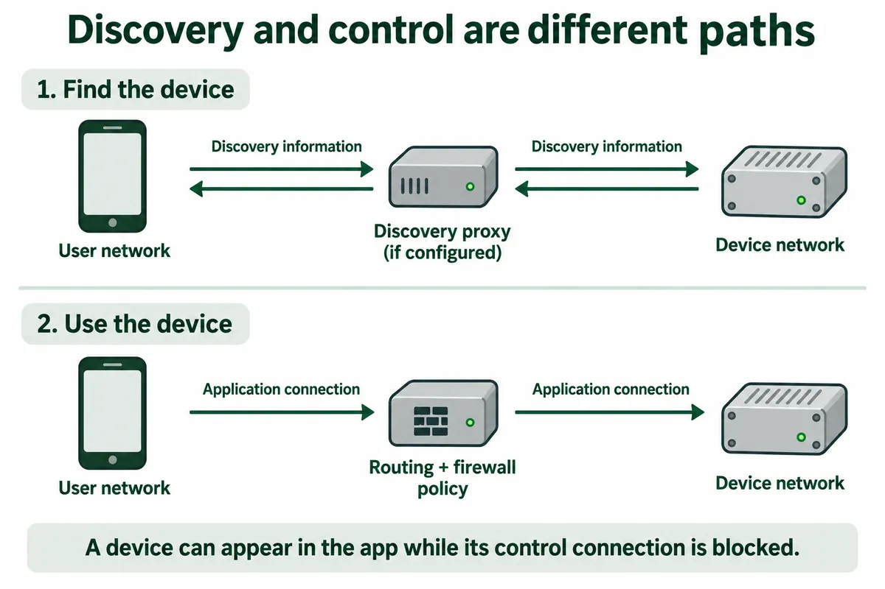

You bring a working connected prototype to a gallery, office, or shared workshop. It powers up and connects to the network, but the control app on your phone shows an empty device list. Back at the desk, the same board and app found each other immediately.
Before changing the hardware, find out whether the phone and device are on networks that are allowed to discover and communicate with each other. A site may deliberately separate staff, guests, and connected equipment. An Ethernet cable and a working internet connection do not tell you whether the local path your app needs is available.
Sites often make this separation with VLANs: logical network groups that can share physical switches.
A shared switch does not mean one shared network
On a small desk setup, the phone and prototype may effectively live in the same local network. At a site, a managed switch can place connected devices into different VLANs. Cable location alone is a poor guide: logical groups can span multiple switches, while neighbouring devices can belong to different groups.
Communication across those groups depends on the routing and access policies in the installation. The site administrator might allow a device to contact an external server while blocking a visitor's phone from reaching it directly. That can be intentional, rather than evidence that either the board or the network is broken.
Describe the expected interaction before requesting a change. For an illustrative exhibition controller, the requirement might be “the staff tablet can find and control this installation, but visitors cannot.” That is more useful than asking someone to remove network isolation until the demo works.
Finding a device and controlling it are separate steps
Many apps first discover a service, then open a connection to use it. If the first step fails, the device may never appear in a list even when a direct connection could work. If the second fails, the device may appear but ignore the user's action or report a connection error.
For software that uses mDNS, the local scope matters. RFC 6762 defines Multicast DNS for name lookup on the local link. Moving the app and device into different VLANs can therefore remove a discovery path that existed on the bench. Cross-network discovery may need a deliberately configured proxy or reflector; ordinary IP connectivity alone does not establish that it is present.
First confirm the protocol your application actually uses. A recent HomeNetworking discussion about internal and IoT VLANs included exactly this uncertainty: replies asked whether the devices used mDNS or a different discovery mechanism. The visible discussion does not establish a completed fix. Turning on an mDNS feature cannot be assumed to fix every app with an empty device list.

Choose a setup method the site can support
An automatic device list is convenient, but it becomes a dependency when there is no other way to configure the app. A Chinese developer's 2021 account of building an mDNS reflector describes the same practical difficulty: separating IoT equipment can break discovery, and some applications offer no place to enter an address manually. It is an individual implementation account, not evidence that every site should install that tool.
For your own prototype, decide what the trial requires. If automatic discovery is essential, document its protocol and service names so the network owner can assess support. If a configured hostname or address is a suitable alternative, make it an intentional setup path and test it. Do not quietly depend on a remembered address that becomes wrong after a lease or network change.
| Setup approach | What it helps with | What remains to check |
|---|---|---|
| App and device on an approved common local network | Reduces cross-network discovery complications | Client isolation, app behaviour, and site permission still matter |
| Selective discovery across network groups | Preserves the site's grouping while exposing required services | Supported discovery protocol, selected networks, and application traffic rules |
| Explicit endpoint configuration | Can avoid reliance on an automatic device list | Stable endpoint management, authentication, and permitted communication |
For example, Ubiquiti's current mDNS proxy documentation describes choosing networks and services for forwarding. That is a product-specific capability, not a universal router setting. Let the site's administrator decide whether and how the intended service should be exposed.
Bring a connection description, not just a working board
Before the visit, give the person responsible for the site a short description of the intended trial. Include where the device connects, which phone or tablet controls it, whether it needs internet access, and how the app finds it. Add the application protocols and ports if they are known. If they are not known, identifying them is a concrete task for the integration team before deployment.
At the site, compare the steps separately. Confirm the device's address and assigned network with the administrator. Check discovery from the intended controller, then test the actual action the user needs. A successful ping is not an application test; a visible name is not proof that control is permitted. Record the app and firmware versions alongside the network arrangement so that a later change can be investigated.
Run the test from the user's real position as well. A developer's laptop may have different permissions from a staff tablet or a guest phone. If the trial requires one group to operate the prototype and another group to remain excluded, test both outcomes. These are proposed deployment checks, not results from a tested site.
Make a failed connection understandable to the user
An empty list leaves people guessing whether the product is off, disconnected, or broken. Where the application allows it, distinguish “no device discovered” from “device found, connection failed.” Show an appropriate next step, such as checking the assigned network or contacting the trial coordinator, rather than encouraging users to alter the site's router.
For a small trial, the deliverable is a repeatable setup that the next person can follow: a documented network arrangement, a supported discovery or configuration method, and a tested control path. That lets participants judge the intended interaction instead of spending the session troubleshooting an invisible device.
If your prototype is ready for a site trial, bring its connection diagram, app behaviour, and the site's known network constraints to Anvol's project contact. Those details help identify the integration work needed before the first participant tries it.